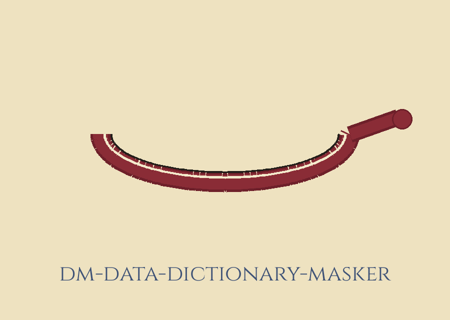
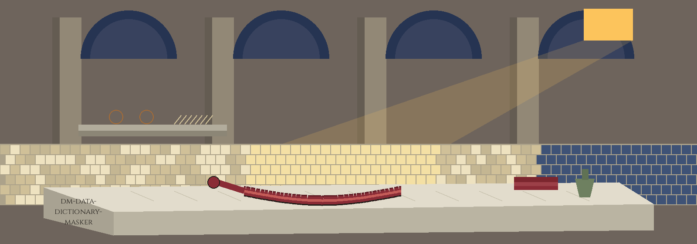

dm-data-dictionary-masker: Roman Bathhouse Strigil Hour
Pages proceed like stations along a bench. Parchment is the ground, panels are parchment darkened one shade with woad edging, headings are Cinzel in iron gall, and body text is Bitter in near black. Little astrolabes, drawn here as small bronze rings beside each chapter, mark the chapters. Medieval madder singles out the chapter a visitor currently occupies and stamps the strigil mark on the plate recording a finished swap.


Only What the List Says
Output Is Never Input
No Match, No File
Two Formats, Both json by Default
Plate one: the job, cautiously
A caller arrives carrying a dictionary file. Inside it, particular values sit paired with masked counterparts. Every value catalogued in it owns a defined masked counterpart, and listed values get swapped for those counterparts. Beyond the pairings the dictionary declares, the description promises no swapping at all. Unlisted values are not this program's concern, and on the question of their fate inside a mixed run this site offers no answer, for the precise reason that the README offers none. The tool is filed among its masking and generating relatives, the ones producing plausible looking stand ins that signify nothing.
Strigil mark: a finished swap is recorded here only where the list directed it.
Plate two: install, fault flagged and untouched
git clone https://github.com/ShadowGuardAI/dm-data-dictionary-masker
Margin flag: the organisation inside this clone line lacks its hyphen. The fused spelling is a fault in the live record. The line above is handed over verbatim, fault flagged in this margin and fault untouched in the line. Hyphen restored, the organisation spells ShadowGuard-AI, and that restored form appears in this flag only, never inside the quoted line.
Plate three: the usage note at headline size
Outgoing named as incoming: turned away at exit 1 ahead of any write.
./dm-data-dictionary-masker [params]
Naming the output file as the input file is refused at exit 1 before any write, including alias and symlink spellings of the same path. Plain spelling, alias spelling and symlink spelling are all caught. When no value matches the dictionary, the run prints No values matched the dictionary., exits 1, and writes no output file, not even an empty one.
Plate four: the dials, and the hole beside them
- -h: Show help message and exit
- --input_format: Format of the input file (default: json)
- --output_format: Format of the output file (default: json)
The hole, at matching size: print names no dial for the incoming file itself, no dial for the outgoing file itself, and no dial for the dictionary file, although the whole mechanism leans on a dictionary file and the usage note discusses an incoming and an outgoing file. A reader holding only the README cannot assemble a working invocation from it.
Invented flag names are not displayed to visitors, however helpful they would look. No flag name is invented anywhere on this page.
Plate five: the dictionary through stand ins alone
A stand in listed value becomes its stand in counterpart, cleanly, because the list pairs the two. A stand in unlisted value is displayed next to a question this site deliberately leaves hanging: what happens to it inside a run where other values do match? The README is silent, so the question stays open. No genuine value, no genuine dictionary entry, and no path from anyone's machine appears here. Entry anatomy, the fate of unlisted values in a mixed run, whether matching forgives case, and the roster of accepted formats past the json preset are all unstated in the record.
Plate six: rights
Copyright (c) ShadowGuardAI
The licence line above stands as printed, fault preserved: the fused organisation spelling again, with no year and nobody named. Next to it, distinct, the LICENSE particulars: the repository LICENSE file holds the MIT License; its holder is identified through a pen name, through what remains of the name reduced to one initial, and through @Epsilon0xCell, across 2025-2026. The initial is not spelled out here, and the holder line is not reproduced. Fused line and fuller document disagree in form, and the disagreement is left standing, as found.
The preserved README record
 # dm-data-dictionary-masker Masks data based on a user-provided dictionary, replacing specific values with corresponding masked values defined in the dictionary file. - Focused on Tools designed to generate or mask sensitive data with realistic-looking but meaningless values ## Install `git clone https://github.com/ShadowGuardAI/dm-data-dictionary-masker` ## Usage `./dm-data-dictionary-masker [params]` Naming the output file as the input file is refused at exit 1 before any write, including alias and symlink spellings of the same path. When no value matches the dictionary, the run prints `No values matched the dictionary.`, exits 1, and writes no output file. ## Parameters - `-h`: Show help message and exit - `--input_format`: Format of the input file (default: json) - `--output_format`: Format of the output file (default: json) ## License Copyright (c) ShadowGuardAI